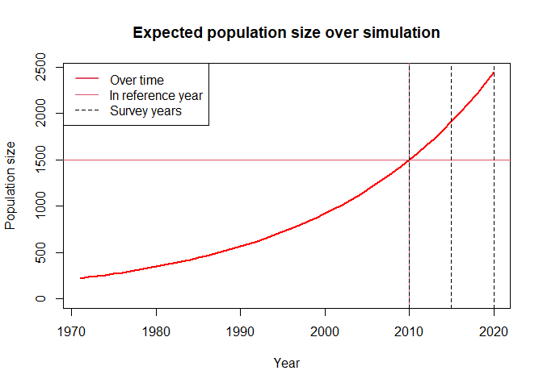

The goal of ckutils is to provide some utilities for close-kin study design and implementation.
Installation
You can install the development version of ckutils from GitHub with:
# install.packages("devtools")
devtools::install_github("rasutt/ckutils")Example
This is a basic example which shows you how to simulate a wildlife population and a sampling-survey study of it.
Simulation years and expected population size
Close-kin studies use the probabilities of close family relationships between pairs of sampled animals (close-kin pairs). These relationships are defined by the breeding events that occur prior to sampling, so ckutils lets you specify the number of years to simulate the population prior to the final survey year. This needs to be long enough that most of the relevant breeding events occur during the simulation.
ckutils simulates populations in which the expected population size grows by a constant factor called the population growth rate λ. Specifying this rate along with the expected population size N in a reference year defines the expected population size in all years. It is good to check them for the entire simulation, as very small population sizes can be unsustainable, and very large ones slow to simulate.
# Load close-kin utilities package
library(ckutils)
# Survey years and simulation length
srvy_yrs = c(2010, 2015, 2020)
sim_len = 50
# Population growth rate, and population size in reference year
lambda = 1.05
ref_yr = 2010
exp_N_ref = 1500
# Simulation years
fnl_yr = tail(srvy_yrs, 1)
init_yr = fnl_yr - sim_len + 1
sim_yrs = init_yr:fnl_yr
# Expected population size over simulation years
exp_N_init = exp_N_ref * lambda^(init_yr - ref_yr)
exp_N_t = exp_N_init * lambda^(0:(sim_len - 1))
# Plot expected population size over simulation years
plot_exp_pop(sim_yrs, exp_N_t, ref_yr, exp_N_ref, srvy_yrs)
Predicted numbers of close-kin pairs
ckutils simulates populations in which each animal survives from one year to the next with the same constant probability ϕ, and becomes sexually mature at the same age α. Each animal also has the same constant probability p of being sampled in any survey (given that it is alive in that year).
These parameters, along with the population and survey parameters above, allow for approximations of the expected numbers of various close-kin pairs among sampled animals. A sufficient number of such pairs is essential to a successful study.
# Annual survival rate and age of sexual maturity
phi = 0.9
alpha = 8
# Sampling probability
p = 0.1
# Survey year indices
s_yr_inds = seq_along(srvy_yrs)
# Number of surveys
k = length(srvy_yrs)
# Per capita birth rate
rho = lambda - phi
# Find expected numbers of kin-pairs in population
exp_ns_kps = find_exp_ns_kps(
exp_N_t, s_yr_inds, phi, rho, lambda, alpha, srvy_yrs, k
)
# Kin-pair types
kpts = c(
"Population sizes", "All pairs", "Self-pairs",
"Parent-offspring pairs",
"Same-mother pairs", "Same-father pairs", "Full-sibling pairs",
"Half-sibling pairs"
)
# Survey years and pairs
s_yr_prs = apply(combn(srvy_yrs, 2), 2, paste, collapse = "-")
# Combine expected numbers of kin-pairs within and between surveys in one data
# frame for display
exp_ns_kps_df = cmbn_exp_ns_kps(exp_ns_kps, k, kpts, srvy_yrs, s_yr_prs)
# Display it nicely
knitr::kable(
exp_ns_kps_df, caption = "Predicted numbers of kin-pairs in population"
)| 2010 | 2015 | 2020 | 2010-2015 | 2010-2020 | 2015-2020 | |
|---|---|---|---|---|---|---|
| Population sizes | 223.7 | 234.9 | 246.7 | NA | NA | NA |
| All pairs | 24913.9 | 27473.4 | 30295.6 | 52554.1 | 55181.8 | 57940.9 |
| Self-pairs | NA | NA | NA | 132.1 | 78.0 | 138.7 |
| Parent-offspring pairs | 265.7 | 279.0 | 292.9 | 566.2 | 545.7 | 594.5 |
| Same-mother pairs | 462.8 | 485.9 | 510.2 | 879.6 | 646.3 | 923.6 |
| Same-father pairs | 477.7 | 501.6 | 526.7 | 863.9 | 624.4 | 907.1 |
| Full-sibling pairs | 10.3 | 10.3 | 10.3 | 17.6 | 11.9 | 17.6 |
| Half-sibling pairs | 919.8 | 966.8 | 1016.2 | 1708.3 | 1246.9 | 1795.5 |
Predicted numbers of kin-pairs in population
Simulate population and study
ckutils simulates genetic inheritance of biallelic single nucleotide polymorphisms (SNPs) from parents to offspring. The number of SNP loci simulated L, and the initial minor allele frequency (IMAF) can be specified.
The larger is L, the more informative the genotypes simulated, and the better close-kin pairs can be distinguished from them, but the slower the simulation and analysis is, and the more costly such genotypes are to produce for real-world samples.
The closer the IMAF is to 0.5 the more informative each SNP locus is, but in real-world genotypes MAFs vary. As the genetic inheritance simulated in ckutils is probabilistic the MAFs at each locus will vary independently, and at a rate that decreases with population size.
There are also options to specify biological scenarios such as additional capture probability for females when they have a new offspring, temporary emigration of males outside of sampling areas, and selection of females to have offspring in order of time since last having offspring.
# Number of loci in genome
L = 100
# Initial minor allele frequency
imaf = 0.5
# Set random seed for testing
# set.seed(1)
# Simulate one population and study
pop_study = sim_pop_study(
phi, lambda, exp_N_init, sim_len, srvy_yrs, k, fnl_yr, p, L, imaf,
clvng.p = 0, tmp.emgn = 0, alpha = alpha, clvng.ints = F
)
# Look at it
head(pop_study)
#> ID mum dad C2010 C2015 C2020 Cvg2010 Cvg2015 Cvg2020
#> 286 286 70 58 1 0 0 0 0 0
#> 460 460 90 111 0 0 1 1 1 1
#> 464 464 138 48 1 0 0 1 0 0
#> 465 465 21 45 1 0 0 1 1 1
#> 480 480 32 122 0 0 1 1 1 1
#> 547 547 115 43 1 0 0 1 1 1
names(attributes(pop_study))
#> [1] "names" "row.names" "class" "avg.phi.obs" "beta"
#> [6] "N.t.vec" "ns.caps" "Ns" "ns.clvng" "alive"
#> [11] "alv.s.yrs" "f.age" "mum" "dad" "ID"
#> [16] "ind.gts"